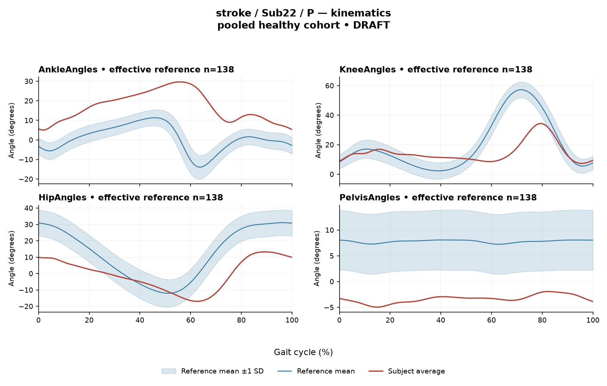

rater1 / Report 30 of 105 / Review spreadsheet row 31
R041BC5B249CC9DC2
Case: stroke_Sub22_P
Read this report independently. Record judgments in the workbook. Browser pages do not save ratings.
Report: exact saved text
# Gait Report Interpretation — Sub22_P **Version:** limited-evidence-v3.1-candidate **Scope:** Research interpretation of a supplied quantitative summary. This is not a diagnosis, not a clinical severity grading, and not a treatment recommendation. --- ## 1. Objective Findings **Participant and side.** Sub22_P is in the stroke group; all data below are from the **paretic** side. The released cycle runs from one paretic initial contact (0%) to the next paretic initial contact (100%); these are two successive occurrences of the same event, not a single instant. No intermediate gait events (e.g., toe-off) are supplied, so all timing is reported as a percentage of the analysis cycle only, and no percentage can be assigned to a stance/swing subdivision or any conventional phase split. **Spatiotemporal values (as supplied).** - Gait speed 0.45 m/s, labelled "limited community ambulator (0.4–0.8 m/s)." This label denotes a **speed band only**; it does not describe measured walking independence, safety, assistive-device use, or real-world mobility. - Cadence 78.8 steps/min. - Step length symmetry index **+5.7%**, computed with the **successive-footfall** definition. By the stated sign convention, a positive value indicates the **paretic step is the longer** of the two. The alternative (instantaneous) step-length definition can yield a different value for some subjects, so this figure is definition-dependent and not interchangeable. **Reference used and its limits.** Kinematic deviation is compared against **138 pooled healthy subjects, 1001 phase points (main_cohort_excel)**; the cohort pools both body sides and all ages and is not age- or speed-matched. The healthy self-selected speed range is 0.80–1.79 m/s, so at **0.45 m/s this subject falls below the reference floor and no speed-matched healthy comparison exists in this dataset.** Any deviation reported below therefore conflates slow-walking effects with stroke-related control differences; these two contributions cannot be separated from these data, and a deviation from this reference does not by itself establish a disease effect, a mechanism, or a clinical diagnosis. The healthy CCI and composite-score figures quoted later are **pooled calibration percentiles**, not matched leave-one-out normal limits for this subject. **Channels available and not available.** Seven EMG channels are summarized (GAS, RF, VL, BF, ST, TA, ERS) plus four sagittal kinematic channels (ankle, knee, hip, pelvis). **Sagittal plane only** — coronal and transverse data are not included in this input. Not supplied here: age, sex, individual gait events (including toe-off), muscle-specific matched normal timing references, non-paretic-side data, time post-stroke, stroke clinical scores, stride-level variability, and raw-signal quality checks. "Not supplied in this summary" is not the same as "absent from the source release"; some of these fields may exist in the release and simply lie outside this input. No channel is documented here as a failed or absent recording. --- ## 2. EMG Envelope and Threshold Findings **How to read these numbers.** All values come from **ensemble-averaged envelopes**. Normalization used a shared maximum across available strides per participant, side and muscle before averaging (in the checked stroke release the denominator is participant-, side- and muscle-specific and is **not** shared between sides). Amplitudes are therefore **relative envelope values** — not activation level, force, or strength — and cannot be used to rank muscles against one another or against the other limb. Averaged curves cannot show stride-to-stride variability, and the pattern below should not be assumed to repeat in every individual stride. "Above-threshold interval" means the **mean envelope exceeded 20% of that same curve's own peak** for at least 3% of the cycle; it is not physiological onset, offset, contraction duration, or evidence of inactivity elsewhere. An onset written as 0% is the analysis-window boundary. | Muscle | Retained interval(s) | Coverage | Peak (rel.) | Max abs. z (location) | |---|---|---|---|---| | GAS | 0–13%; 14–19%; 31–64% | 60% | 0.61 | 10.1 above reference @ 57% | | RF | 88–53% (wraps boundary) | 68% | 0.45 | 2.5 above @ 20% | | VL | 69–81%; 91–54% (wraps) | 75% | 0.59 | 4.5 above @ 23% | | BF | 59–38% (wraps) | 80% | 0.46 | 2.3 above @ 10% | | ST | 62–35% (wraps) | 73% | 0.38 | 2.3 **below** @ 0% | | TA | 61–37% (wraps) | 77% | 0.50 | 2.5 above @ 18% | | ERS | 0–100% | 100% | 0.64 | 5.8 above @ 80% | **Boundary continuity.** RF, VL, BF, ST, TA and ERS are each reported as remaining above their own 20% threshold **across the 0%/100% cycle boundary**, i.e. the mean envelope did not drop below threshold at the initial-contact boundary. GAS is the exception: its first retained interval begins at the analysis-window boundary (0%) rather than wrapping, so no boundary continuity is established for GAS. These are properties of the averaged envelope under this threshold-and-duration rule, not statements about continuous contraction. **Non-covered segments.** GAS has the lowest coverage (60%), with retained intervals separated by a 1%-wide gap (13–14%) and a longer segment between 19% and 31% and after 64% that is not covered by a retained interval. VL shows two retained regions with non-covered segments at roughly 54–69% and 81–91%. A segment without a retained interval may contain sub-threshold envelope values **or** an above-threshold excursion shorter than the 3% minimum; the supplied evidence does not distinguish these, so no claim of muscle inactivity is warranted. ERS is reported at 100% coverage with a single 0–100% interval; this is the reported, rounded figure, and a rounded 100% does not by itself let me certify that no brief below-threshold sample exists. Coverage percentages are reproduced exactly as supplied and were not recomputed from interval endpoints. **Timing.** Because no toe-off and no muscle-specific matched timing reference are supplied, none of these intervals can be called early, delayed, prolonged, shortened or normal, and none can be mapped to a functional role such as clearance, push-off or weight acceptance. Anatomical actions may be named descriptively (e.g., GAS as an ankle plantarflexor, TA as a dorsiflexor, RF/VL as knee extensors with RF also a hip flexor, BF/ST as hamstrings, ERS as an erector spinae trunk extensor), but no interval here is evidence of that action occurring at a functionally defined moment. **Max |z| values.** Max |z| is an **extreme-value statistic** — the largest standardized difference at any of 1001 phase points — not a single-observation z-score. In this dataset every one of 109 healthy controls exceeds |z| = 2 on at least one muscle, and the per-muscle healthy 95th percentiles for this statistic span 3.65 (ERS) to 4.61 (TA), higher still under leave-one-out. The conventional 2-SD rule therefore does **not** apply. - **GAS (10.1 at 57%)** and **ERS (5.8 at 80%)** exceed the entire quoted span of per-muscle healthy 95th percentiles, so they are large standardized differences from the phase-specific reference mean even on this lenient scale. - **VL (4.5 at 23%)** falls inside the 3.65–4.61 span; the VL-specific 95th percentile is not supplied, so VL cannot be placed above or below its own healthy limit here. - **RF (2.5), TA (2.5), BF (2.3), ST (2.3)** are below the lowest quoted per-muscle 95th percentile and are unremarkable for this statistic. - Direction is relative to the **phase-specific reference mean** at that location, not to a healthy percentile limit: ST is below that mean at 0%; the others listed are above it. The location of max |z| marks the largest standardized difference, **not** the time of peak envelope amplitude and not a gait event — though it is worth noting that the ST location (0%) coincides numerically with the initial-contact cycle boundary. - All of these comparisons inherit the unmatched, sub-floor-speed limitation described in Section 1. **Co-contraction indices.** CCI is the Falconer–Winter index over the **full continuous envelopes** across the whole cycle (2 × common area / summed areas). It is a whole-cycle overlap index of normalized envelopes — not simultaneous activation time, not force, not a phase-specific result — and can be non-zero even where detected bursts do not overlap, because sub-threshold activity contributes. It is method-dependent, so values and thresholds from other studies or algorithms do not transfer. - **TA vs GAS = 0.56**, inside the pooled healthy interval 0.24–0.59 and above the healthy median of 0.39, lying **close to the upper endpoint** of that interval. - **RF vs BF = 0.71**, inside the pooled healthy interval 0.48–0.83 and slightly above the healthy median of 0.68. Being inside these intervals does not establish physiologically normal co-activation or normal muscle function, and a value outside them would not establish pathological co-activation, stiffness, impaired motor control or any diagnosis. These are pooled calibration percentiles, unmatched for speed and age. --- ## 3. Kinematic and Reference Comparisons All kinematics are **sagittal plane only**. | Channel | Sagittal ROM | GVS | |---|---|---| | Ankle | 24.6° | 18.23 | | Knee | 27.0° | 15.32 | | Hip | 30.2° | 15.64 | | Pelvis | 3.0° | 11.16 | **Composite (GPS-like) = 15.30.** This is the RMS of the four sagittal GVS values — the "GPS-like" composite, not the validated 9-variable GPS. Against the pooled reference distribution (median 5.1, 95th percentile 10.7) this subject's composite sits above the 95th percentile, i.e. the summary difference from the reference waveforms is larger than that of most of the calibration cohort. The ankle channel contributes the largest single GVS (18.23), followed by hip (15.64) and knee (15.32), with pelvis lowest (11.16). **Interpretive limits.** GVS and the GPS-like composite are **summary magnitudes of difference** from the reference mean waveform, averaged over the cycle. They do **not** localize the deviation to a phase of the cycle, do not indicate direction (e.g., more flexed vs more extended), and do not identify which portion of the waveform drives the score. The reference is pooled across sides and ages and, critically, contains no walking speeds below 0.80 m/s; at 0.45 m/s these differences unavoidably mix slow-walking kinematics with stroke-related changes, and the supplied data cannot apportion them. The 5.1 / 10.7 figures are pooled calibration percentiles rather than matched leave-one-out limits for this participant, so exceeding 10.7 is a descriptive comparison, not a statistical or clinical abnormality classification and not evidence of a disease effect. **On ROM.** The pelvic sagittal ROM of 3.0° and the joint ROMs above are reported values only. **ROM alone does not establish a clinical restriction** without an appropriate matched comparison, and no ROM-specific reference values are supplied in this input. No severity grade or significance level can be assigned to any value here. --- ## 4. Questions for Further Clinical Assessment These are open questions raised by the summary; none presupposes that the mechanism or measurement issue in question has already been observed or established. 1. **Speed confound.** Is a speed-appropriate comparison obtainable — for example, a healthy reference walking at a matched reduced speed, or repeat testing of this participant at a different self-selected or paced speed — so that the contribution of walking speed to the composite score and to the EMG z-statistics could be examined rather than assumed? 2. **Large GAS and ERS standardized differences.** Would inspection of the full mean envelopes and the raw/unprocessed signals help determine whether the GAS (10.1 at 57%) and ERS (5.8 at 80%) findings reflect genuine envelope shape differences, or whether normalization (shared-maximum denominator), electrode placement, cross-talk or other signal-quality factors contribute? Raw-signal quality checks were not part of this input. 3. **ERS full-cycle coverage.** Is there independent evidence — for instance stride-level envelopes or the unrounded coverage figure — bearing on whether the ERS mean envelope truly remained above its 20% threshold throughout, and whether trunk EMG behaviour differs across individual strides? 4. **GAS coverage pattern.** The GAS retained intervals are fragmented and its coverage (60%) is the lowest of the seven channels while its coverage total and interval endpoints are reported independently. Would recomputation or review of the detection output clarify the fragmented pattern, and would examining individual strides indicate whether the averaged pattern represents the typical stride? 5. **Gait events.** Can individual toe-off and other event timings be retrieved from the release for this participant? Without them, no interval can be placed within a gait phase, and no timing can be characterized as early, delayed or prolonged. 6. **Contralateral and non-sagittal data.** Are non-paretic-side EMG and kinematics, and coronal/transverse kinematics, available? Note that between-side EMG amplitude comparison would remain invalid under this normalization, since the denominator is side-specific. 7. **Step-length definition.** Does the instantaneous step-length definition yield a different symmetry value for this participant, and does the +5.7% (longer paretic step) finding hold across definitions and across trials? 8. **Missing participant descriptors.** Can age, sex, time post-stroke and available clinical scores be retrieved for this participant to contextualize the comparison, recognizing that even complete descriptors would not create a speed-matched reference within this dataset? 9. **Direct observation.** Given that GVS and the composite localize neither phase nor direction, would clinical observation and full waveform review be useful to characterize the movement pattern underlying the ankle-, hip- and knee-channel deviation magnitudes? **Overall caveat.** Every comparison in this report is descriptive and derives from averaged curves compared against an unmatched pooled reference with no coverage of this participant's walking speed. Nothing here establishes a physiological mechanism, a disease effect, a diagnosis, or a clinical severity level, and no treatment implication should be drawn from it.
Requirements for this report
Fill the corresponding Coverage rows in the workbook. G03 is included once. These are the approved requirements, not prefilled judgments.
| Excel row | ID | Required content | Components / optional content |
|---|---|---|---|
| 156 | R061 | Describe walking speed 0.45 m/s and that it is below the stated 0.80 m/s reference floor; no reference at this speed is supplied. | AND: displayed speed and that it lies below the 0.80 m/s reference floor, so no speed-supported healthy reference exists in this dataset. Optional: cadence, speed-band label (not a functional claim). One sentence may also serve the comparability half of G03. |
| 157 | R062 | Identify the ankle as the leading GVS difference AND describe at least one further prominent difference using hip OR knee. Exact GVS values are optional; identify the findings as reference-relative sagittal summary differences. | AND: ankle as leading AND (hip OR knee). Stating which joint is larger is optional; asserting the reverse order is an error. Exact GVS values are optional; no waveform direction, phase or restriction is required. Pelvis optional. |
| 158 | R063 | Describe GAS envelope above its phase-specific reference mean at approximately 57% of the analysis cycle (displayed max |z| 10.1). Within each route, muscle identity AND mean-relative direction AND approximate cycle location are required. Exact max-|z| repetition is optional. | Required for each route: muscle identity AND direction relative to the phase-specific reference mean AND approximate cycle location. Optional: exact max |z| value, comparison with the supplied endpoint span (descriptive only). Prohibited: percentile classification, gait phase, physiological onset, severity. |
| 159 | R064 | Describe the ERS envelope above its phase-specific reference mean at approximately 80% of the analysis cycle. | AND: ERS identity, above-mean direction and approximate location. Exact max |z| and any permitted displayed-endpoint comparison are optional. No compulsory percentile or clinical classification. |
| 160 | R066 | Describe the supplied successive-footfall step-length index 5.7% and its meaning: the paretic step is longer. | AND: displayed index and the direction supported by its sign. Optional: formula, definition wording. Acceptable phrasing for small displayed values: "a small difference with the paretic step slightly shorter/longer" (not a cutoff). Prohibited: restating the index as a percentage shortening (E01), severity grades, whole-gait symmetry generalization (E07 issue, not an omission). |
| 161 | G03 | Express a meaningful limitation of reference comparability AND why the comparison cannot establish disease effects or clinical diagnosis; for controls it cannot establish disease or overall normality. One statement may also support a case requirement. | AND: comparability and inference limitations |
Exact model input: system instruction
Draft a research gait-report interpretation for a physical therapist or physiatrist using only the supplied quantitative summary. This is a limited-evidence interpretation task, not diagnosis or treatment selection. Rules: - Describe the participant's actual group and side, available findings, and missing channels accurately. Healthy-group membership does not prove normal physiology; deviations from an empirical reference do not by themselves establish disease. - Treat detected EMG intervals and coverage as properties of an averaged envelope under the stated threshold and duration rule. Do not convert them into physiological onset, offset, duration, continuous contraction, or inactivity outside the intervals. You may describe reported coverage, retained intervals and boundary continuity at the mean-envelope level. Do not infer the same pattern in every individual stride. Say no below-threshold segment only when the supplied evidence establishes that; a rounded coverage value or no retained interval alone does not establish it. - Individual toe-off and matched muscle-specific timing references are not supplied in this task. Use percentages of the analysis cycle. When the input explicitly identifies an initial-contact boundary, you may name that boundary or describe numerical proximity to it. Do not assign stance/swing, loading response, pre-swing, mid-stance or another event to a percentage, or substitute a conventional 60% split. Anatomical muscle actions may be named, but do not map an interval to a gait-phase function such as clearance, push-off or weight acceptance. Do not characterize timing as normal, early, delayed or prolonged without the required evidence. - Respect the supplied normalization method. Relative envelope amplitude is not strength or force, and average curves do not establish stride-to-stride variability. - Report CCI as a whole-cycle overlap index of normalized EMG envelopes. You may compare it with the supplied empirical interval or a supplied median, including proximity to an endpoint. Do not invent an unavailable median. Being within that interval does not establish physiologically normal co-activation or normal muscle function; being outside it does not establish pathological co-activation, stiffness, impaired control or a diagnosis. CCI is not simultaneous activation time, muscular force or a phase-specific result. It depends on normalization and envelope methods; do not transfer values or thresholds from other studies or algorithms. - Describe GVS and GPS-like as summary differences from the stated reference. Neither localizes waveform direction or phase; ROM alone does not establish a clinical restriction without an appropriate comparison. Do not treat pooled calibration percentiles as matched leave-one-out normal limits. - Where using a reference comparison, convey both limited comparability and the inability to establish a disease effect or clinical diagnosis from that comparison. One clear explanation per report is enough; age and speed need not be recited as separate checklist words. A speed inside an overall range does not prove that an appropriate matched reference exists. Apply these limits to controls as well. - The location of maximum |z| is the largest standardized difference from the reference, not necessarily the time of peak envelope amplitude or a gait event. Above/below reference in an EMG row means relative to the phase-specific reference mean at that location, not relative to a healthy percentile limit. - Preserve numerical direction and the displayed precision. Do not invent values, clinical severity grades, statistical significance, or unavailable reference values. Descriptive comparisons with supplied values remain allowed. Near-boundary rounded values do not justify classifying hidden unrounded values. - Clinical follow-up questions may ask whether a mechanism or measurement issue exists; do not presuppose it has already been observed. Do not recommend treatment. If EMG is unavailable, section 2 may simply state that envelope timing, amplitude and CCI cannot be assessed. Reference-only plots do not provide patient EMG. Use exactly these four sections: 1. Objective Findings 2. EMG Envelope and Threshold Findings 3. Kinematic and Reference Comparisons 4. Questions for Further Clinical Assessment
Exact model input: case summary
Candidate interpretation version: limited-evidence-v3.1-candidate
Draft the four-section report using only this subject's supplied evidence.
Metric definitions (read before interpreting any number below):
- All joint angles and ROM values are SAGITTAL PLANE only. Coronal/transverse data are not included.
- The released EMG curves are ensemble-averaged envelopes. For each participant and recorded muscle, normalization uses a shared maximum across the available strides before averaging; individual strides are not independently rescaled to their own peaks. This pipeline uses the released mean curves without further amplitude normalization. In the checked stroke release, the denominator is participant-, side-, and muscle-specific; it is not shared between sides. The local array audit verified 614 evaluable combinations, not all 700; 86 lacked valid nonzero paired samples. Amplitudes are relative envelope values, not absolute neural activation, force, or strength. Do not rank muscles as stronger or weaker from these amplitudes, or infer stride-to-stride variability from an average curve.
- Above-threshold intervals are the regions where the averaged envelope exceeds 20% of that curve's own peak, minimum retained interval 3% of the cycle (by sample count). An interval written as (X%-Y%) with X > Y wraps across the 100%->0% cycle boundary (envelope remains above threshold across the cycle-defining event). An onset of 0% is the analysis-window boundary, not necessarily a physiological onset. "No interval detected" means no region met the threshold + duration criteria; it does NOT mean the muscle is inactive or non-functional.
- CCI is the Falconer-Winter co-contraction index computed on the full continuous envelopes (2*common area / summed areas), so it can be non-zero even when the DETECTED burst intervals of the pair do not overlap (sub-threshold activity contributes).
- The composite kinematic deviation score is the RMS of the per-joint Gait Variable Scores over the sagittal channels provided ("GPS-like", not the validated 9-variable GPS).
- Step length symmetry index: 200*(paretic - non-paretic)/(paretic + non-paretic), in %. NEGATIVE means the paretic-side step is SHORTER. Two operational step-length definitions exist (successive-footfall: each heel's position at its own initial contact; instantaneous: both heels at the same instant) and give different values for some subjects -- the definition actually used is stated next to the symmetry value.
- "Max |z| deviation" is the LARGEST absolute z-score across all 1001 phase points of the cycle, comparing this curve to the healthy-cohort mean/SD at each phase. This is an extreme-value statistic, NOT a single-observation z-score: in this dataset every one of 109 healthy controls exceeds |z| = 2 on at least one muscle, and per-muscle healthy 95th percentiles for this statistic run 3.65 (ERS) to 4.61 (TA) -- higher still under leave-one-out. Do not label a value abnormal by the conventional 2-SD rule; use the healthy reference range given per muscle where provided.
- Healthy-cohort CCI reference (this dataset): RF-vs-BF median 0.68 (2.5th-97.5th pct 0.48-0.83); TA-vs-GAS median 0.39 (0.24-0.59). Composite score reference: median 5.1, 95th percentile 10.7.
- COHORT BACKGROUND (calibration context, not necessarily the exact reference used for this subject -- the actual reference composition is stated in a dedicated line with the subject data below): the full healthy cohort is 138 subjects for kinematics, effective n = 106-109 per muscle for EMG (29 controls have no usable EMG; completeness varies by age), pooling both body sides and all ages; it is not age- or speed-matched to this subject. A leave-one-out run uses one subject fewer than these counts.
- SPEED SUPPORT LIMIT (applies to most stroke subjects in this dataset): the healthy reference cohort's self-selected walking speeds span 0.80-1.79 m/s. If this subject's gait speed is below 0.80 m/s, NO speed-matched healthy reference exists in this dataset -- 41 of the 50 stroke subjects are below that floor. Deviations from the reference then conflate slow-walking effects with stroke-specific control changes, and the two cannot be separated from these data. Describe deviations from the reference as such; do not attribute them wholly to stroke pathology.
- Additional source fields are outside this input. Age, sex and gait events may be available in the release; time post-stroke, stroke clinical scores and a non-paretic-side designation apply only to the stroke cohort, as applicable. Do not claim every listed field exists for every participant. Distinguish not supplied, not applicable and documented absent recordings.
The released paretic-side cycle runs from initial contact of that limb at 0% to its next initial contact at 100%. The cycle boundary may be called initial contact; the endpoints are successive occurrences, not one instant. No intermediate event or phase boundary is supplied.
Model-visible information boundary: the summary contains mean-curve metrics and algorithm-detected intervals, not individual toe-off, matched normal muscle timing, stride-level variability, raw-signal quality checks, or expert plots. Information not supplied here must not be described as absent from the source dataset. Gait-cycle percentages alone do not identify gait phases.
Subject: Sub22_P (group: stroke, affected side: paretic)
Gait speed: 0.45 m/s (limited community ambulator (0.4-0.8 m/s)) [The ambulation label denotes a speed band only, not measured walking independence, safety or real-world community mobility.]
Cadence: 78.8 steps/min
Step length symmetry index: 5.7% (step-length definition: successive_footfall)
Composite kinematic deviation score (GPS-like): 15.30
Deviation reference actually used for this subject: 138 healthy subjects (pooled), 1001 phase points, source: main_cohort_excel.
EMG envelope findings:
- GAS: above-threshold interval(s) 0%-13%; 14%-19%; 31%-64%, 60% of cycle above threshold, peak normalized amplitude 0.61, max |z| vs healthy reference: 10.1 (above reference, at 57% of cycle)
- RF: above-threshold interval(s) 88%-53% (wraps cycle boundary), 68% of cycle above threshold, above threshold across cycle boundary, peak normalized amplitude 0.45, max |z| vs healthy reference: 2.5 (above reference, at 20% of cycle)
- VL: above-threshold interval(s) 69%-81%; 91%-54% (wraps cycle boundary), 75% of cycle above threshold, above threshold across cycle boundary, peak normalized amplitude 0.59, max |z| vs healthy reference: 4.5 (above reference, at 23% of cycle)
- BF: above-threshold interval(s) 59%-38% (wraps cycle boundary), 80% of cycle above threshold, above threshold across cycle boundary, peak normalized amplitude 0.46, max |z| vs healthy reference: 2.3 (above reference, at 10% of cycle)
- ST: above-threshold interval(s) 62%-35% (wraps cycle boundary), 73% of cycle above threshold, above threshold across cycle boundary, peak normalized amplitude 0.38, max |z| vs healthy reference: 2.3 (below reference, at 0% of cycle)
- TA: above-threshold interval(s) 61%-37% (wraps cycle boundary), 77% of cycle above threshold, above threshold across cycle boundary, peak normalized amplitude 0.50, max |z| vs healthy reference: 2.5 (above reference, at 18% of cycle)
- ERS: above-threshold interval(s) 0%-100%, 100% of cycle above threshold, above threshold across cycle boundary, peak normalized amplitude 0.64, max |z| vs healthy reference: 5.8 (above reference, at 80% of cycle)
Co-contraction indices:
- TA_vs_GAS: CCI = 0.56
- RF_vs_BF: CCI = 0.71
Joint kinematic findings (sagittal plane):
- AnkleAngles: range of motion 24.6 deg, Gait Variable Score 18.23
- KneeAngles: range of motion 27.0 deg, Gait Variable Score 15.32
- HipAngles: range of motion 30.2 deg, Gait Variable Score 15.64
- PelvisAngles: range of motion 3.0 deg, Gait Variable Score 11.16Reference context for expert review
# Reference context: stroke/Sub22_P Mean/SD reference: 138 controls; method pooled; exclusions: []. Effective reference counts: GAS=109, RF=108, VL=109, BF=106, ST=108, TA=107, ERS=106, AnkleAngles=138, KneeAngles=138, HipAngles=138, PelvisAngles=138. The exact system and user input files define what the model receives. The EMG and kinematic plots are supplementary expert evidence, not model inputs. The plotted mean plus/minus one SD is descriptive, not a clinical normal band. Negative lower EMG bands can result from mean minus SD; they do not imply negative recorded EMG. The max-|z| p95 span in the input is pooled calibration context. Complete muscle-specific LOO thresholds are not supplied; an appropriately indeterminate classification is allowed. Controls are excluded from their own mean/SD reference, but cohort-level calibration has prior reference-data reuse. It is not an independent matched clinical limit. GPS-like is a four-channel sagittal composite, not the validated nine-variable GPS. The pooled median/p95 background is not a matched LOO normality boundary. CCI uses continuous normalized envelopes over the whole analysis cycle. An empirical interval comparison does not establish normal muscle function. Threshold intervals and rounded coverage describe the averaged envelope. Rounded 100% coverage and one interval do not prove absence of short below-threshold gaps. Use the group-specific cycle and normalization provenance in the actual input. No individual intermediate gait events or matched normal muscle timing are supplied. Administrative age and published bilateral speed are not added to this input. Expert-visible plots do not justify requiring unseen direction, phase or morphology. For a new-case requirement, cite exact input evidence. Select clinically useful descriptive content without inferring a diagnosis or severity from rank alone.
EMG and kinematic curves
The curves are supplementary expert evidence. Only the saved text inputs were supplied to the model; do not require curve-only observations.
EMG

Kinematics
